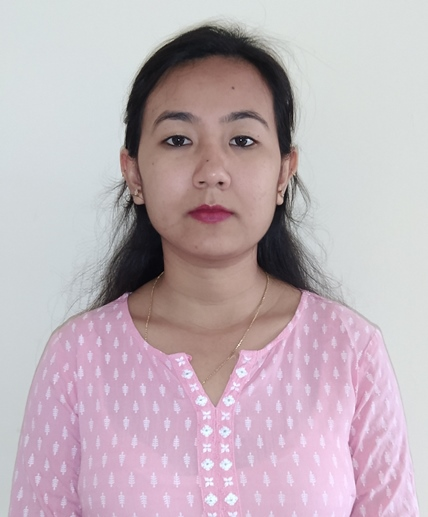
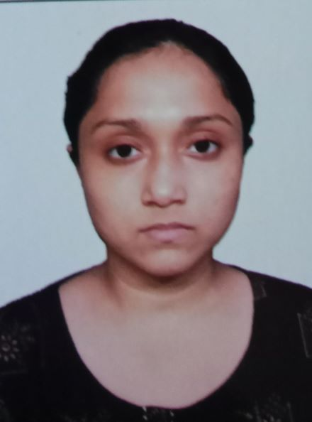
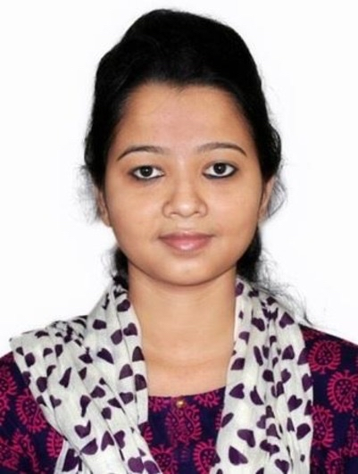

Dr. Manas Khatua
Assistant Professor Computer Science and Engineering Indian Institute of Technology Guwahati
Assistant Professor Computer Science and Engineering Indian Institute of Technology Guwahati
| Sl. No. | Name of Student | Project Title | Duration | Co-guide and/or Remarks |
|---|---|---|---|---|
|  Dr. Habila Basumatary | Cyber Security in Smart Micro-Grid –- Attack Detection and User Authentication | Dec' 2022 - Dec'2023 | Dr. Shabari Nath, Dept. of EEE, IIT Guwahati |
| Sl. No. | Name of Student | Thesis Title | Graduation Year | Co-guide and/or Remarks |
|---|---|---|---|---|
| Sreeparna Das | -- | Jul' 2022 - Till date | - | |
| Saurabh Kumar Srivastava | -- | Jan' 2022 - Till date (Registered in IIT (BHU)) |
Dr. Prasenjit Chanak, IIT (BHU) Varanasi | |
| Surja Sanyal | A Lightweight and Scalable IDS for Host Oriented Mimicry Attack Detection in Industrial IoT Networks | Jul' 2021 - Till date | Dr. Pratik Chattopadhyay, IIT (BHU) Varanasi | |
| Soumya Nandan Mishra | Adaptive Routing in Low Power and Lossy Networks for Mission-Critical IoT Applications | Jul' 2020 - Till date | - | |
|  Karnish Nasrin Ahmed Tapadar | Adaptive Link Scheduling in 6TiSCH Network for Resource Efficient Data Communication | Jan' 2019 - Till date | Dr. T. Venkatesh | |
| Alakesh Kalita | Adaptive Resource Allocation for Faster Formation of 6TiSCH IoT Network | Jan' 2018 - May' 2022 (Graduated) | Publications from PhD: 2 IEEE Transactions, 2 ACM Transactions, 3 IEEE Journal, 2 International Conference
Status after PhD: PostDoc in NUS, Singapore |
| Sl. No. | Name of Student | Project Title | Specialization | Graduation Year | Co-guide and/or Remarks |
|---|---|---|---|---|---|
| Singarapu Pavan Kumar | -- | CSE | Pursuing | -- | |
| Pratik Manoj Rana | -- | CSE | Pursuing | -- | |
| Aditya Kumar Sakre | Vulnerability in Cell Scheduling Function and its Countermeasure for 6TiSCH Networks | CSE | 2023 | Published in INDICON'23 Conference | |
| Sanket Sonowal | Implementation and Verification of PUF based User Authentication in IoT using FPGA | CSE | 2023 | -- | |
| Vikash Raghuwanshi | Man-In-The-Middle Attack Prevention in OCPP Protocol | CSE | 2022 | -- | |
| Naladala Jeshwanth | Supporting DiffServ in Distributed Link Scheduling for 6TiSCH Networks | CSE | 2022 | -- | |
| Aditya Tandon | Low-Latency Cell Relocation in Distributed Link Scheduling for 6TiSCH Networks | CSE | 2022 | -- | |
| Priya Undirwade | CNN-BiLSTM and Encoder Model for Network Intrusion Detection | Data Science | 2021 | Dr. Shabari Nath, EEE Dept. | |
| Arunav Saikia | Designing Machine Learning based Intrusion Detection System for IoT Network | Data Science | 2021 | Dr. Shabari Nath, EEE Dept. | |
| Priyanshu P. R. Singh | Designing a Distributed Scheduling Function for Adapting Traffic in 6TiSCH Network | CSE | 2021 | Published in ICSET'23 Conference | |
| Shiva Verma | Adaptive and Distributed Cell Scheduling Function for 6TiSCH Networks | CSE | 2020 | -- | |
| Sushant Yadav | Collision Detection and Mitigation in Distributed Scheduling of 6TiSCH Networks | CSE | 2020 | -- |
| Sl. No. | Name of Student | Project Title | Graduation Year | Remarks |
|---|---|---|---|---|
| Pradeep Kumar | -- | Pursuing | -- | |
| Pauras Manoj Tarle | -- | Pursuing | -- | |
| Aviral Gupta | Flow-based botnet detection using machine learning | 2021 | -- | |
| Sunny Kumar | A comparative Analysis of ECC and RSA | 2021 | -- | |
| Shubham Kumar | Machine Learning and Deep Learning approach for Intrusion Detection Systems | 2021 | -- | |
| Mayank Chandra | Exploring Decentralized Group Communication | 2021 | -- | |
| Baddu Hari | Security in IoT based on Smart Contracts | 2020 | -- | |
| Durgesh Yadav | Lightweight and Distributed Access Control for IoT Devices | 2020 | -- | |
| Sachin Chouhan | Smart Lighting | 2020 | -- | |
| Tamilselvan S | Intelligent System for Efficient Power Management in an Organization | 2019 | -- | |
| B Sree Siddharth, G Sravan | Development of System based Firewall and Monitoring the system through web Application | 2018 | in IIT Jodhpur | |
| Vivek Dwivedi, Sarvesh kumar | Development of eRikshaw Charging Mobile App | 2018 | in IIT Jodhpur | |
| M. Jagadeesh | Network Anomaly Detection using Online Laplacian Component Analysis | 2017 | in IIT Jodhpur |